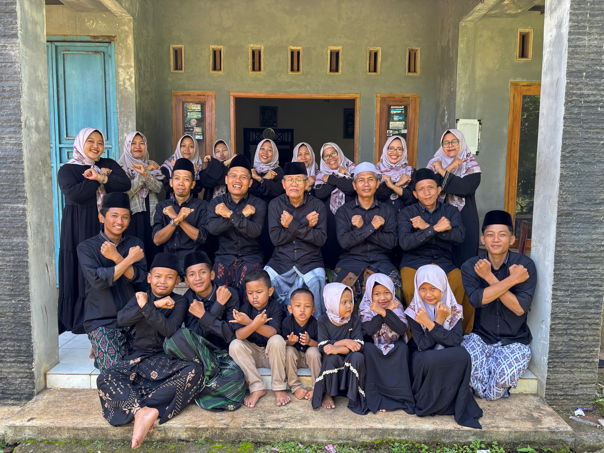

Begitulah kami menyebut diri kami. Dengan menyebut nama leluhur semoga harapan baik senantiasa membersamai kami.
Muhammad Ali Chadirun adalah nama ayah kami. Beliau keturunan dari Bpk. Sanrodji dan Ibu Tarwiyah. Dan ibu kami bernama Wasilah, keturunan dari Bpk. Mad Soleh dan Ibu Muflihah.
Di kalangan orang arab kebiasaan memanggil seperti inilah yang ditujukan untuk menghormati seseorang. Dalam ilmu nahwu nama seperti ini yang biasa disebut 'alam kunyah. Akan tetapi dalam tata bahasa arab suatu lafadz tak mungkin menduduki satu jabatan 'irob tanpa adanya 'amil. Lalu, mengapa tiba-tiba kalimat "Bani" dibaca nashob tanpa adanya 'amil yang menashobkan?
Pada tatanan kalimat bahasa Arab, ada yang namanya ikhtishos, yaitu meringkas hukum yang disandarkan kepada dhomir (kata ganti) pada isim dhohir yang jatuh setelahnya. Dan nashobnya isim tersebut disebabkan أَخُصُّ yang wajib terbuang.
Alhasil, kalo kamu mau ngomongnya "Bani", ya harus pake kata ganti dulu. Contoh nih : Kami Bani Chadirun mengucapkan Minal 'aidin wal faizin🙏.
Kalo ngga gitu ya udah ngomongnya pake rofa' aja (Banu).